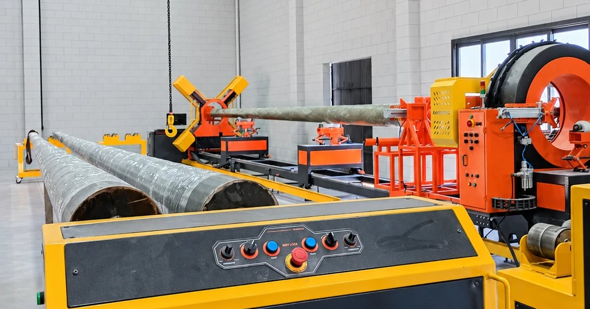

A ABNT NBR 16989:2021 é a referência brasileira para postes em PRFV. Ela define como o poste é verificado em duas frentes: o comportamento do poste inteiro sob carga e as propriedades do material que o compõe.
Conhecer esses ensaios ajuda quem especifica a saber o que pedir ao fornecedor e como ler os laudos apresentados.
Um conceito antes: a carga nominal (Cn)
A carga nominal é o esforço de referência que o poste deve suportar em serviço, expresso em daN. É ela que aparece no código do modelo: um PFC 10-300 tem carga nominal de 300 daN. Vários ensaios são definidos como múltiplos de Cn.
Ensaios no poste
| Ensaio | Critério de aceitação |
|---|---|
| Inspeção e dimensional | Comprimento L ±50 mm; seção ±15 mm |
| Flexão com carga nominal | Sem fissura; flecha ≤ 10% de L |
| Carga excepcional (1,4 × Cn) | Flecha residual ≤ 1% de L |
| Ruptura (2 × Cn) | O poste não pode romper |
| Torção e momento fletor | Sem fissura ou deformação |
| Torque M16 | 8 daN sem trinca |
Em resumo: com a carga de serviço, o poste deve flexionar dentro do limite e sem fissurar. Com 40% acima dela, deve voltar praticamente à posição original. E com o dobro da carga nominal, não pode romper.
Ensaios no material
| Ensaio | Critério de aceitação |
|---|---|
| Envelhecimento UV (2.000 h) | Variação ≤ ±25%; sem fibra exposta |
| Flamabilidade (UL 94) | Classificação mínima V-1 |
| Propagação de chama | Extinção em até 30 s |
| Trilhamento (NBR 10296) | Classe 2A 1,5 kV |
| Dureza Barcol | ≥ 30 em todos os pontos |
| Absorção de água | NBR 5310, método gravimétrico |
Esses ensaios avaliam o que acontece com o compósito ao longo do tempo: exposição ao sol, ao fogo, à umidade e à passagem de corrente pela superfície (trilhamento). A dureza Barcol indica se a resina curou corretamente.
Além dos ensaios: identificação e rastreabilidade
Um poste conforme também precisa ser identificável em campo. Nos postes Qleve Fiber, uma placa a 4 m da base traz fabricante, mês e ano, comprimento, carga nominal, número de série e concessionária, e o ponto de engastamento vem marcado no poste.
Do lado da fábrica, cada poste é vinculado ao seu lote de produção, com o registro dos lotes de resina, catalisador e componentes usados.
O que pedir ao fornecedor
- Laudos dos ensaios de tipo, no poste e no material, com o laboratório responsável.
- Descrição do controle de produção e da rastreabilidade por lote.
- Tabela de modelos com comprimento, carga nominal, diâmetros de topo e base e engastamento.
- Orientações de transporte, armazenagem e manuseio.
Veja como a Qleve Fiber organiza processo, controles e ensaios na página de qualidade.